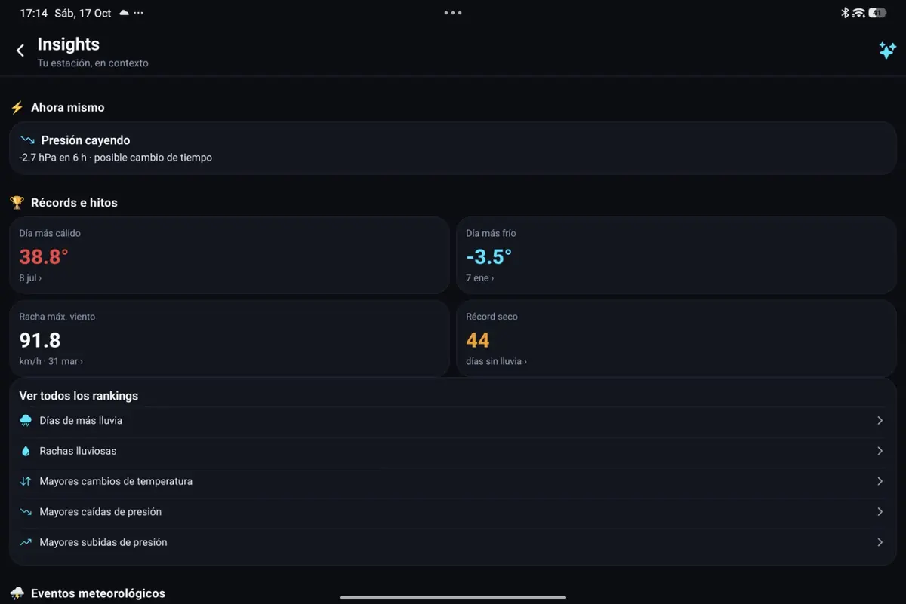
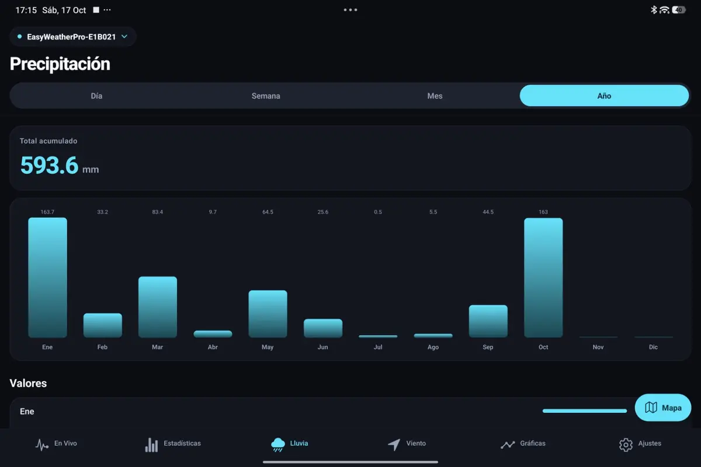
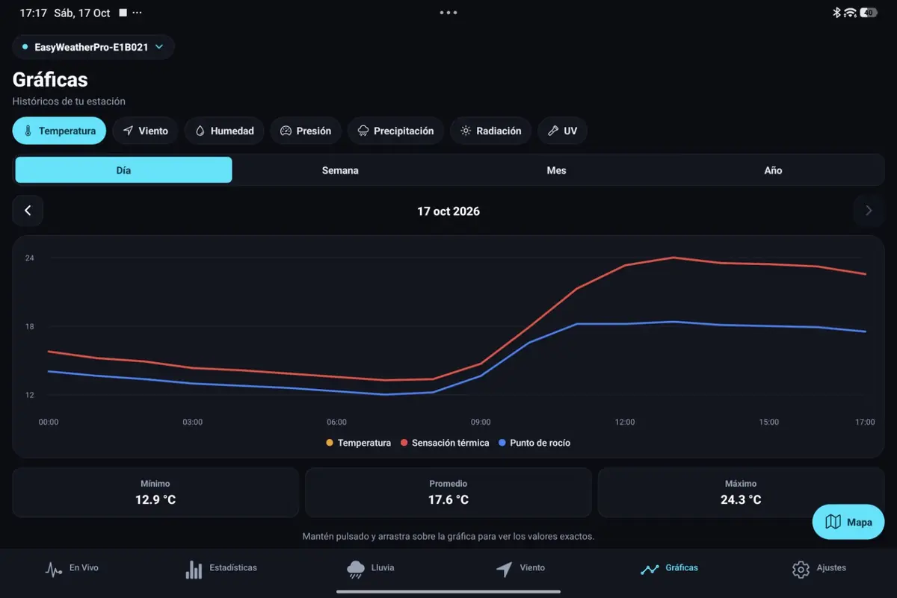
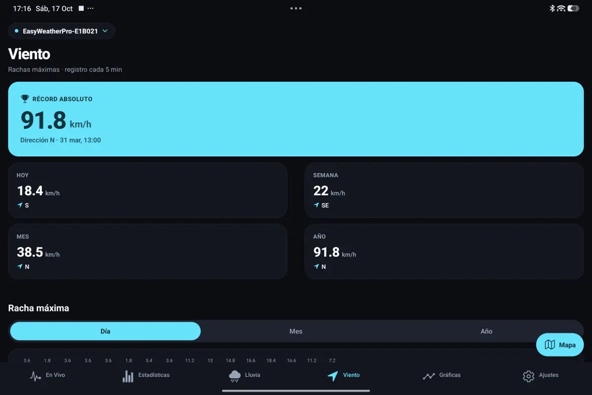

Rainfall
Review available totals and accumulated periods.
Your local weather over time
Turn the observations available from your personal weather station into rainfall history, temperature trends, wind gust records, statistics and meaningful local weather context.
Get MeteoPulse on Google Play
Rainfall history
A current rain rate is only one moment. Historical totals and monthly context help show how precipitation has developed through the year using the observations available for your station.

Temperature & wind


Review available totals and accumulated periods.
Follow historical changes, highs and lows.
Put stronger gust observations into historical context.
Identify notable maximum and minimum values from available observations.
Use summaries, streaks and rankings to understand patterns.
Use station history as context for meaningful local episodes.
Using Ecowitt? See compatible Ecowitt setups. Using a compatible Froggit setup? See the Froggit page. For setup help, visit Support.